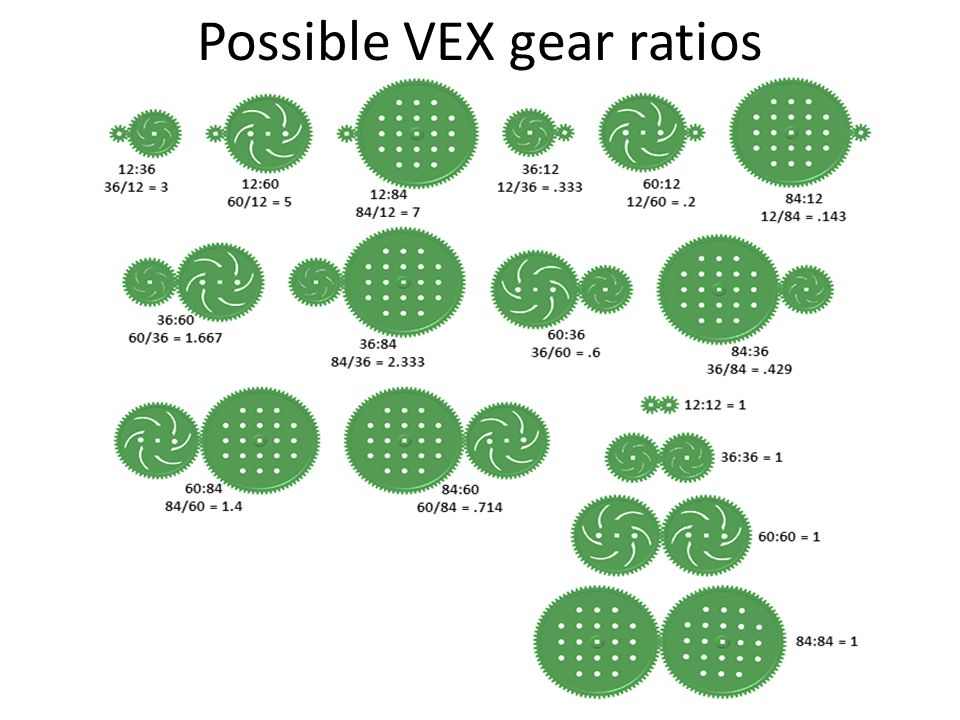

Gear Ratios
Gears provide the ability to transfer motor energy between different systems of your robot, change the direction of flow, and also allow you to gain mechanical advantage. Mechanical advantage is the ratio of the force produced by a machine to the force applied to it. An example of mechanical advantage is when you swap gears on your bicycle. Because of the usefulness gears offer in Vex, you will need to use gear ratios in many aspects of your robot, whether for your drivetrain, lift or flywheel. Gears offer you high speeds and low torque or high torque and low speeds and a mix in the middle. (You can think of torque as power/force, high torque means you will have a lot of power/force.)
High torque example - In the 2021-22 game Tipping Point an objective was lifting goals which required a lot of force and thus you would need to gear your lift for a high torque.
High-speed example - In the 2022-23 game Spin-Up requires teams to shoot discs into goals and one design was building a fast spinning flywheel so you would have to gear it for speed.
Calculating Gear Ratios
To calculate gear ratios/mechanical advantage you will need to know the formula:
Number of teeth of driven gear / Number of teeth of driver gear
Driver gear is the gear connected to the motor and driven gear are the gear connected to the driver gear.
For example, if you are given a driver gear of 12 teeth and a driven gear of 84 you would put 84/12 in the calculator which would give you 7, meaning this gear ratio has a mechanical advantage of 7 making it a high torque gear ratio. This would mean whatever force your output force will be 7 times your input force but it is also 7 times slower than if it had a mechanical advantage of 1 (no advantage) because it has to travel 7 times as far This direct example is our gear ratio of our 4 bar lift in Tipping Point.
Another example is the gear ratio of 60 teeth driven and 12 tooth driver. You would use the formula and would put it in your calculator which would give you a mechanical advantage of 0.2. This mechanical advantage is the opposite of the last one as it is geared for torque and this one gears it for speed. This example is our gear ratio of our flywheel in Spin-Up.
*Note mechanical advantages over 1 will give you torque but a loss of speed and a mechanical advantage less than 0 will make you lose torque but gain speed.